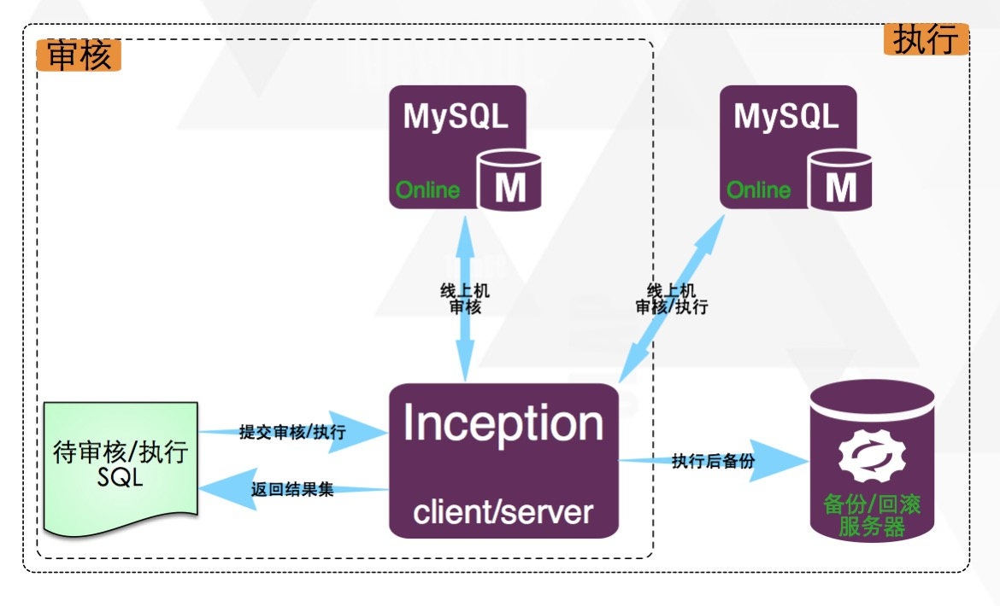

介绍
介绍
goInception是一个集审核、执行、备份及生成回滚语句于一身的MySQL运维工具， 通过对执行SQL的语法解析，返回基于自定义规则的审核结果，并提供执行和备份及生成回滚语句的功能。
架构

使用方式
goInception延用inception的使用方式，在审核的sql开始前添加注释来指定远端服务器，并在sql的前后添加特殊标识以区分待审核语句，示例如下：
/*--user=root;--password=root;--host=127.0.0.1;--check=1;--port=3306;*/
inception_magic_start;
use test;
create table t1(id int primary key);
inception_magic_commit;
致谢
goInception基于TiDB的语法解析器，和业内有名的inception审核工具重构。